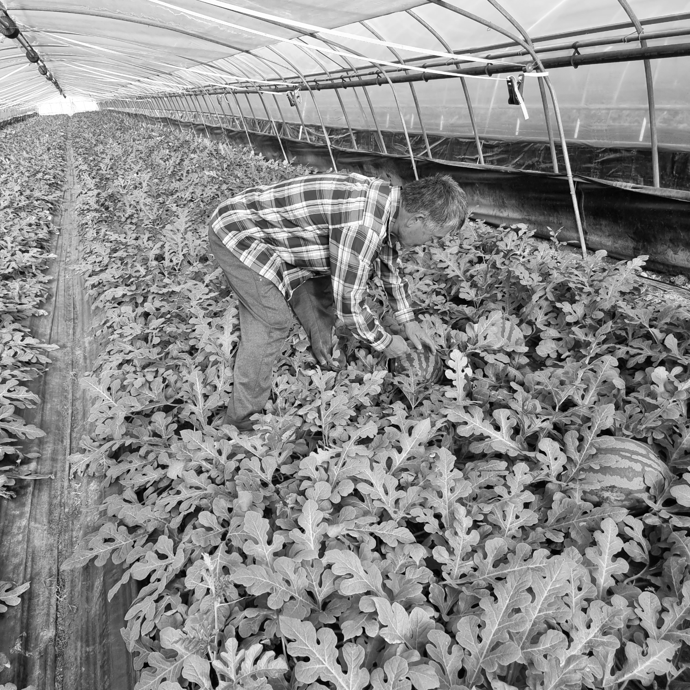

1. 밤
자연의 맛과 풍미를 그대로 담은 고품질 밤을 제공합니다. 건강하고 맛있는 밤을 통해 고객님의 일상에 풍요로움을 더합니다.
최고보다 최선을 다하는 기업
아산율림영농조합은 충청남도 아산시에 위치한 전문 농업 유통 및 판매 기업입니다.
당사는 품질 좋은 농산물을 고객들에게 제공하기 위해 최선을 다하는 것을 원칙으로 하고 있습니다.
아산율림영농조합법인은 품질을 최우선으로 생각하며, 농산물의 생산부터 유통까지 모든 과정에서 엄격한 품질 관리를 시행하고 있습니다. 고객님께서 믿고 구매하실 수 있도록, 항상 최상의 제품을 제공하기 위해 노력합니다. 우리는 작은 일에도 최선을 다하며, 고객의 기대를 뛰어넘는 서비스를 제공하고자 합니다.

자연의 맛과 풍미를 그대로 담은 고품질 밤을 제공합니다. 건강하고 맛있는 밤을 통해 고객님의 일상에 풍요로움을 더합니다.
시원하고 달콤한 수박으로 여름의 상쾌함을 선사합니다. 엄선된 수박만을 선별하여 고객들에게 제공합니다.
신선하고 상큼한 오렌지로 비타민을 가득 채우세요. 당사의 오렌지는 신선도를 유지하기 위해 최선을 다해 선별 및 유통됩니다.
우리는 앞으로도 계속해서 농산물의 품질을 높이고, 고객 만족도를 더욱 향상시키기 위해 끊임없이 연구하고 개발할 것입니다. 지역 사회와 협력하여 지역 농산물의 가치를 높이고, 지속 가능한 농업을 실천하여 모두가 함께 성장할 수 있는 기업이 되겠습니다.


아산율림영농조합법인은 항상 여러분의 건강과 행복을 생각하며,
최상의 제품과 서비스를 제공하기 위해 최선을 다하고 있습니다. 앞으로도 많은 관심과 사랑 부탁드립니다.